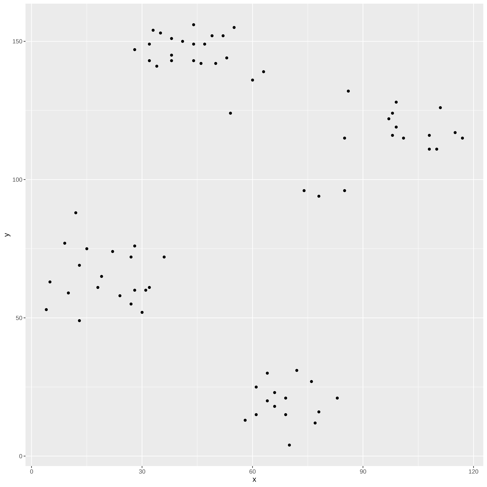
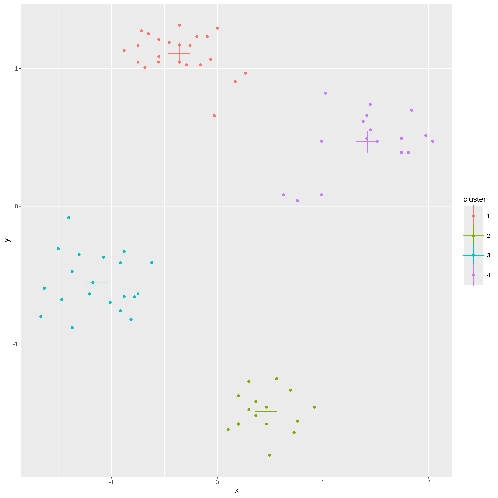
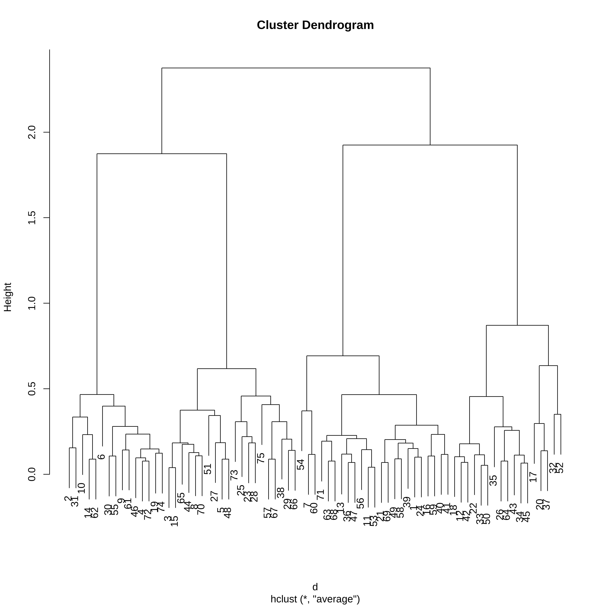
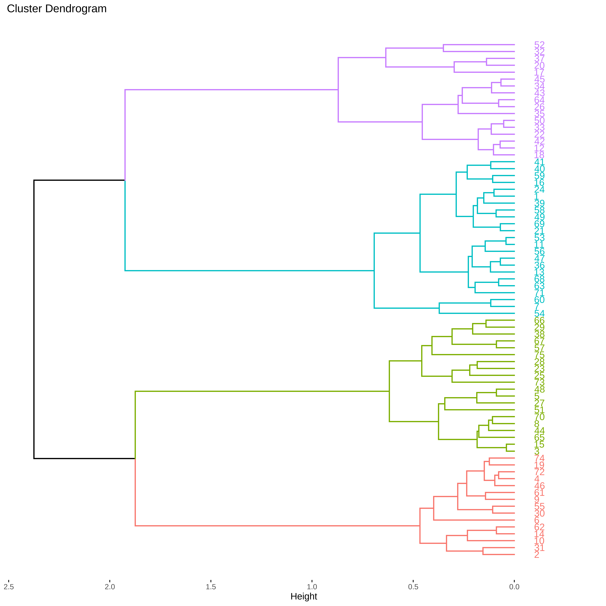
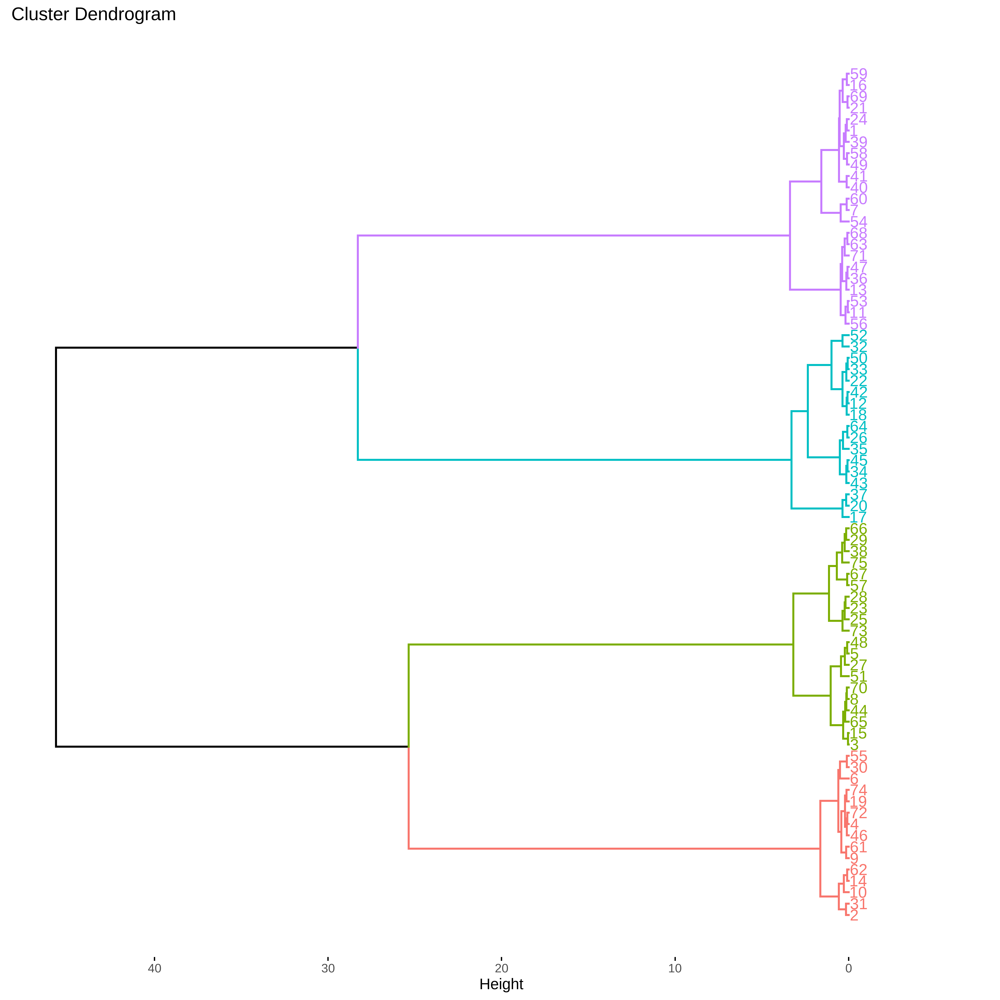
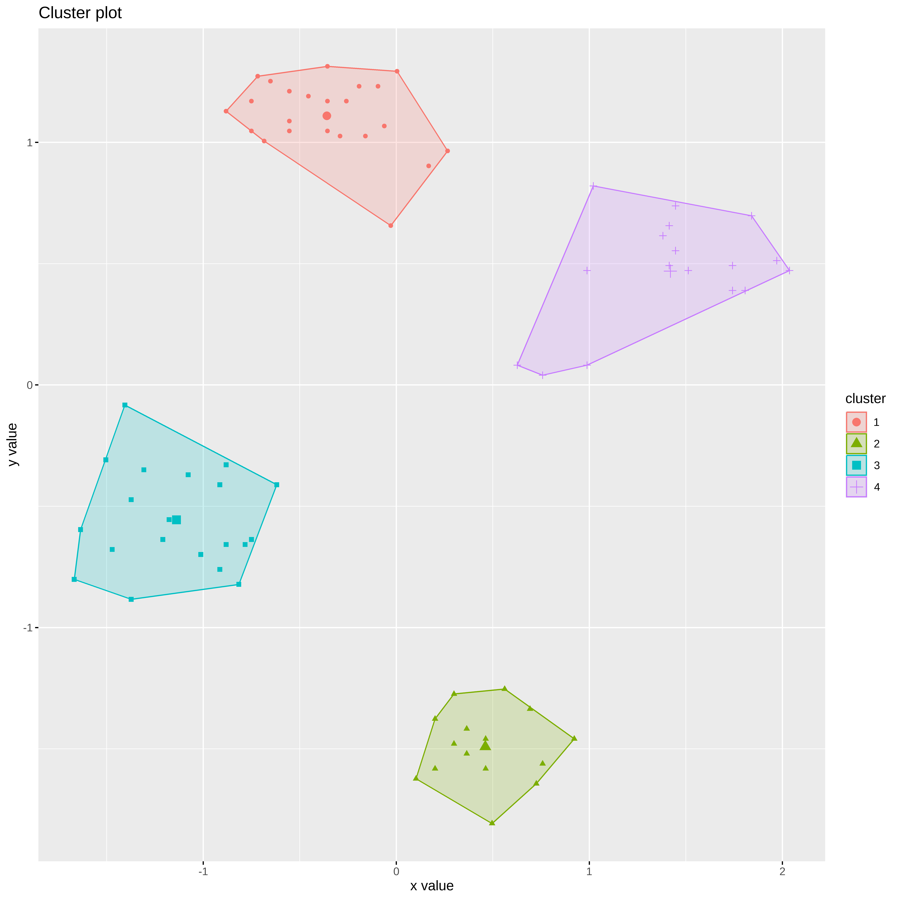

── Attaching core tidyverse packages ──────────────────────── tidyverse 2.0.0 ──
✔ dplyr 1.1.4 ✔ readr 2.1.5
✔ forcats 1.0.0 ✔ stringr 1.5.1
✔ ggplot2 3.5.0 ✔ tibble 3.2.1
✔ lubridate 1.9.3 ✔ tidyr 1.3.1
✔ purrr 1.0.2
── Conflicts ────────────────────────────────────────── tidyverse_conflicts() ──
✖ dplyr::filter() masks stats::filter()
✖ dplyr::lag() masks stats::lag()
ℹ Use the conflicted package (<http://conflicted.r-lib.org/>) to force all conflicts to become errorsAnálise de Clusters
Bibliotecas
Este conteúdo foi adaptado de: https://mhahsler.github.io/Introduction_to_Data_Mining_R_Examples/book/clustering-analysis.html
Dados
O conjunto de dados Ruspini, que consiste em 75 pontos dividido em quatro grupos, ele é popular para ilustrar técnicas de agrupamento. É um conjunto de dados muito simples com clusters bem separados. O conjunto de dados original tem os pontos ordenados por grupo. Podemos embaralhar os dados (linhas) usando sample_frac.
data(ruspini, package="cluster")Manipulando os dados
ruspini <- as_tibble(ruspini) %>% sample_frac()
ruspini# A tibble: 75 × 2
x y
<int> <int>
1 70 4
2 41 150
3 32 149
4 44 143
5 117 115
6 13 69
7 44 156
8 74 96
9 63 139
10 52 152
# ℹ 65 more rowsExplorando os dados
Nesta etapa os dados são avaliados, pois eventualmente temos situações de dados ausentes, pontos afastados.
ggplot(ruspini, aes(x = x, y = y)) + geom_point()
summary(ruspini) x y
Min. : 4.00 Min. : 4.00
1st Qu.: 31.50 1st Qu.: 56.50
Median : 52.00 Median : 96.00
Mean : 54.88 Mean : 92.03
3rd Qu.: 76.50 3rd Qu.:141.50
Max. :117.00 Max. :156.00 Normalização
Como os algoritmos usam medidas de distância é necessário usarmos a normalização para que os resultados naõ sejam afetados pela escala dos dados.
## Aqui vamos essa função para fazer a normalização
escala_numerica <- function(x) x %>% mutate_if(is.numeric, function(y) as.vector(scale(y)))
ruspini_norm <- ruspini %>% escala_numerica()
summary(ruspini_norm) x y
Min. :-1.66806 Min. :-1.80743
1st Qu.:-0.76649 1st Qu.:-0.72946
Median :-0.09442 Median : 0.08158
Mean : 0.00000 Mean : 0.00000
3rd Qu.: 0.70879 3rd Qu.: 1.01582
Max. : 2.03655 Max. : 1.31355 Métodos para obtenção de Clusters
K-médias
O algoritmo do k-médias usa a distância Eucliadiana quadrática. Aqui vamos usar k=4 e vamos rodar o algoritmo 10 vezes
km <- kmeans(ruspini_norm, centers = 4, nstart = 10)
kmK-means clustering with 4 clusters of sizes 23, 20, 17, 15
Cluster means:
x y
1 -0.3595425 1.1091151
2 -1.1385941 -0.5559591
3 1.4194387 0.4692907
4 0.4607268 -1.4912271
Clustering vector:
[1] 4 1 1 1 3 2 1 3 1 1 3 4 1 4 4 1 2 3 4 2 2 3 3 1 3 2 3 4 1 2 4 1 1 1 4 3 2 2
[39] 3 1 2 2 1 2 4 1 1 4 2 2 1 4 2 2 1 2 1 4 2 2 3 3 3 2 4 4 4 3 1 3 1 3 1 3 2
Within cluster sum of squares by cluster:
[1] 2.658679 2.705477 3.641276 1.082373
(between_SS / total_SS = 93.2 %)
Available components:
[1] "cluster" "centers" "totss" "withinss" "tot.withinss"
[6] "betweenss" "size" "iter" "ifault" ruspini_clusters <- ruspini_norm %>% add_column(cluster = factor(km$cluster))
ruspini_clusters# A tibble: 75 × 3
x y cluster
<dbl> <dbl> <fct>
1 0.496 -1.81 4
2 -0.455 1.19 1
3 -0.750 1.17 1
4 -0.357 1.05 1
5 2.04 0.472 3
6 -1.37 -0.473 2
7 -0.357 1.31 1
8 0.627 0.0816 3
9 0.266 0.964 1
10 -0.0944 1.23 1
# ℹ 65 more rowsggplot(ruspini_clusters, aes(x = x, y = y, color = cluster)) + geom_point()
Adicionando os centroides aos gráficos
centroids <- as_tibble(km$centers, rownames = "cluster")
centroids# A tibble: 4 × 3
cluster x y
<chr> <dbl> <dbl>
1 1 -0.360 1.11
2 2 -1.14 -0.556
3 3 1.42 0.469
4 4 0.461 -1.49 ggplot(ruspini_clusters, aes(x = x, y = y, color = cluster)) + geom_point() + geom_point(data = centroids, aes(x = x, y = y, color = cluster), shape = 3, size = 10)
Vamos usar a biblioteca factoextra para visualizarmos os clusters
Welcome! Want to learn more? See two factoextra-related books at https://goo.gl/ve3WBafviz_cluster(km, data = ruspini_norm, centroids = TRUE, repel = TRUE, ellipse.type = "norm")
k-medoides
Os medoides pertencem ao proprio conjunto de dados. Podemos observar que o resultado é semelhante ao obtido no k-médias, mas o algoritmo é mais lento.
Medoids:
ID x y
[1,] 31 0.4629124 -1.4583746
[2,] 13 -0.3566917 1.1698207
[3,] 72 1.4464374 0.5538374
[4,] 17 -1.1762959 -0.5549325
Clustering vector:
[1] 1 2 2 2 3 4 2 3 2 2 3 1 2 1 1 2 4 3 1 4 4 3 3 2 3 4 3 1 2 4 1 2 2 2 1 3 4 4
[39] 3 2 4 4 2 4 1 2 2 1 4 4 2 1 4 4 2 4 2 1 4 4 3 3 3 4 1 1 1 3 2 3 2 3 2 3 4
Objective function:
build swap
0.4422977 0.3187056
Numerical information per cluster:
size max_diss av_diss diameter separation
[1,] 15 0.4589783 0.2433250 0.8359025 1.157682
[2,] 23 0.6558680 0.2993397 1.1591436 0.767612
[3,] 17 0.9459253 0.3862345 1.4627043 0.767612
[4,] 20 0.5755656 0.3401125 1.1192822 1.157682
Isolated clusters:
L-clusters: character(0)
L*-clusters: [1] 1 4
Silhouette plot information:
cluster neighbor sil_width
31 1 4 0.8592059
28 1 4 0.8553255
45 1 4 0.8530741
12 1 4 0.8449473
66 1 4 0.8361633
58 1 4 0.8187150
52 1 4 0.8178795
48 1 3 0.8087015
14 1 4 0.8013799
1 1 4 0.7983516
65 1 4 0.7918724
15 1 4 0.7768261
19 1 4 0.7727269
35 1 3 0.7425993
67 1 4 0.7328306
13 2 4 0.8368407
2 2 4 0.8305019
16 2 3 0.8222142
4 2 4 0.8220686
73 2 4 0.8158429
7 2 3 0.8150398
69 2 4 0.8134280
40 2 4 0.8064757
43 2 3 0.7984225
55 2 4 0.7969057
33 2 4 0.7841631
24 2 3 0.7794889
10 2 3 0.7605512
32 2 4 0.7591035
3 2 4 0.7473901
34 2 3 0.7423529
47 2 4 0.7402623
51 2 4 0.7249133
57 2 3 0.7007372
46 2 4 0.6739284
71 2 3 0.5661372
29 2 3 0.5413082
9 2 3 0.4673917
61 3 2 0.7898609
72 3 2 0.7834341
23 3 2 0.7822308
18 3 2 0.7790446
11 3 2 0.7780891
74 3 2 0.7694930
70 3 2 0.7624335
39 3 2 0.7609359
68 3 2 0.7400337
62 3 2 0.7392052
25 3 2 0.7390493
5 3 2 0.7234199
27 3 2 0.5894345
36 3 1 0.5666610
22 3 2 0.5114355
63 3 2 0.4358476
8 3 2 0.3312348
17 4 2 0.8094377
44 4 1 0.8027447
6 4 2 0.7782513
54 4 1 0.7704646
26 4 1 0.7700388
20 4 2 0.7597906
41 4 2 0.7530091
75 4 2 0.7436695
53 4 1 0.7412965
37 4 2 0.7270442
21 4 1 0.7255183
49 4 1 0.7226938
56 4 1 0.7042349
59 4 2 0.7026960
64 4 2 0.6966533
60 4 1 0.6921822
38 4 1 0.6756339
30 4 1 0.6463656
42 4 2 0.6005277
50 4 1 0.6004543
Average silhouette width per cluster:
[1] 0.8073733 0.7454551 0.6812849 0.7211353
Average silhouette width of total data set:
[1] 0.7368082
2775 dissimilarities, summarized :
Min. 1st Qu. Median Mean 3rd Qu. Max.
0.03868 1.16780 1.92500 1.78630 2.47760 3.91720
Metric : euclidean
Number of objects : 75
Available components:
[1] "medoids" "id.med" "clustering" "objective" "isolation"
[6] "clusinfo" "silinfo" "diss" "call" "data" plot(kmed)

Outra forma de visualização
fviz_cluster(kmed, ruspini_norm,
ellipse.type = "convex",
repel =TRUE,
ggtheme =theme_minimal())knitr::kable(kmed$medoids)| x | y |
|---|---|
| 0.4629124 | -1.4583746 |
| -0.3566917 | 1.1698207 |
| 1.4464374 | 0.5538374 |
| -1.1762959 | -0.5549325 |
Attaching package: 'janitor'The following objects are masked from 'package:stats':
chisq.test, fisher.testtabyl(kmed$clustering) kmed$clustering n percent
1 15 0.2000000
2 23 0.3066667
3 17 0.2266667
4 20 0.2666667Clusters Hierarquicos
O agrupamento hierárquico começa com uma matriz de distância ´dist()´ e tem como padrão method=“Euclidiano”. As matrizes de distância tornam-se muito grandes rapidamente (tamanho e complexidade de tempo é O(n2) onde n é o número se pontos de dados. Só é possível calcular e armazenar a matriz para pequenos conjuntos de dados.
d <- dist(ruspini_norm)A função hclust() implementa o HCA, ou seja, o cluster hierarquico aglomerativo. Vamos começar usando o método completo.
hc <- hclust(d, method = "complete")O HCA retorna um dendrograma e não uma definiçaõ de clusters.
plot(hc)
Se usarmos a biblioteca factoextra podemos definir o número de clusters que queremos visualizar.
fviz_dend(hc, k=4)Warning: The `<scale>` argument of `guides()` cannot be `FALSE`. Use "none" instead as
of ggplot2 3.3.4.
ℹ The deprecated feature was likely used in the factoextra package.
Please report the issue at <https://github.com/kassambara/factoextra/issues>.
Podemos extrair as atraibuições de cluster cortando o dendrograma em 4 partes e adicionando a identidade aos dados.
clusters <- cutree(hc, k = 4)
cluster_completo <- ruspini_norm %>%
add_column(cluster = factor(clusters))
cluster_completo# A tibble: 75 × 3
x y cluster
<dbl> <dbl> <fct>
1 0.496 -1.81 1
2 -0.455 1.19 2
3 -0.750 1.17 2
4 -0.357 1.05 2
5 2.04 0.472 3
6 -1.37 -0.473 4
7 -0.357 1.31 2
8 0.627 0.0816 3
9 0.266 0.964 2
10 -0.0944 1.23 2
# ℹ 65 more rowsPodemos usar o método de Ward para obter o cluster.
hc_w <- hclust(d, method = "ward.D")O HCA retorna um dendrograma e não uma definiçaõ de clusters.
plot(hc_w)
Se usarmos a biblioteca factoextra podemos definir o número de clusters que queremos visualizar.
fviz_dend(hc_w, k=4)
fviz_cluster(list(data = ruspini_norm, cluster = cutree(hc_w, k = 4)), geom = "point")
Validação dos Clusters
Silhouette
#library(cluster)
plot(silhouette(kmed$clustering,d))fviz_silhouette(silhouette(kmed$clustering, d)) cluster size ave.sil.width
1 1 15 0.81
2 2 23 0.75
3 3 17 0.68
4 4 20 0.72
Numero ótimo de clusters
## Usando o silhouette
fviz_nbclust(ruspini_norm, pam, method ="silhouette", k.max = 8)## Metodo do cotovelo
fviz_nbclust(ruspini_norm, kmeans, method ="wss", k.max = 8)